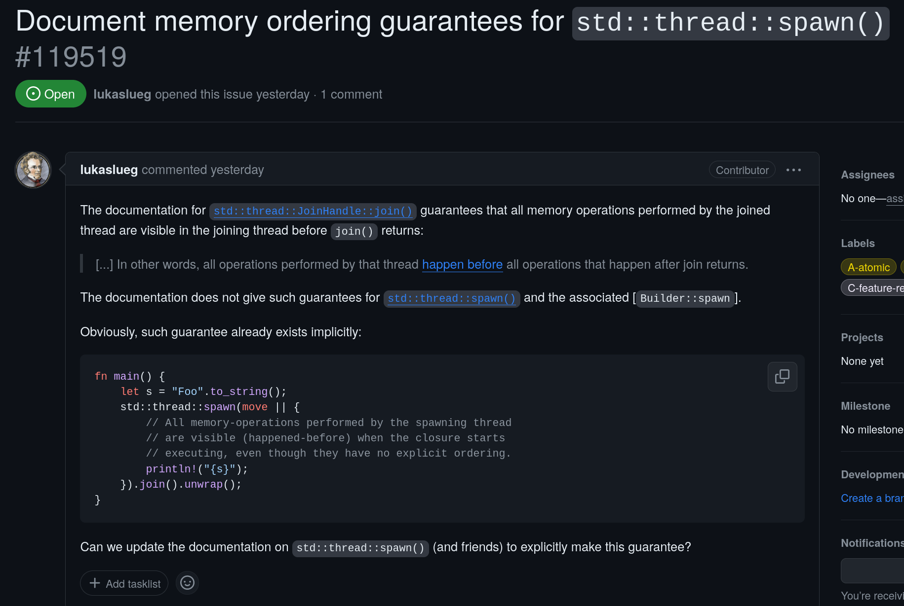
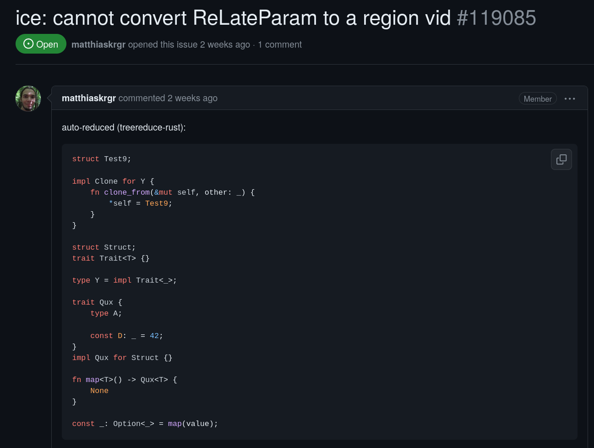

whoami
Nilstrieb
- contributing since 2022
- compiler contributors team since 2023
made in collaboration with
you who sees this right now
and you
and you too
thanks.rust-lang.org

labelling
labelling
 https://forge.rust-lang.org/release/issue-triaging.html
https://forge.rust-lang.org/release/issue-triaging.html
bisection
bisection
$ cargo new bisect
Created binary (application) `bisect` package
$ cd bisect
$ vim src/main.rs
$ cargo-bisect-rustc --access github --regress ice \
--start 2023-01-01 --end 2023-12-19
minimization 

minimization
I minimized that issue to 60 lines in 2 hours
https://github.com/Nilstrieb/ice-104649 http://blog.pnkfx.org/blog/2019/11/18/rust-bug-minimization-patterns/https://github.com/Nilstrieb/cargo-minimize
tracking issues
tracking the state of a feature
719 issues (2023-01-03)
new issues aren't ready yet
really old issues often have problems
go to golden middle :)
summarize,
aggregate open questions
aggregate resolved questions
propose next steps
stabilize...

...or close
final comment periods